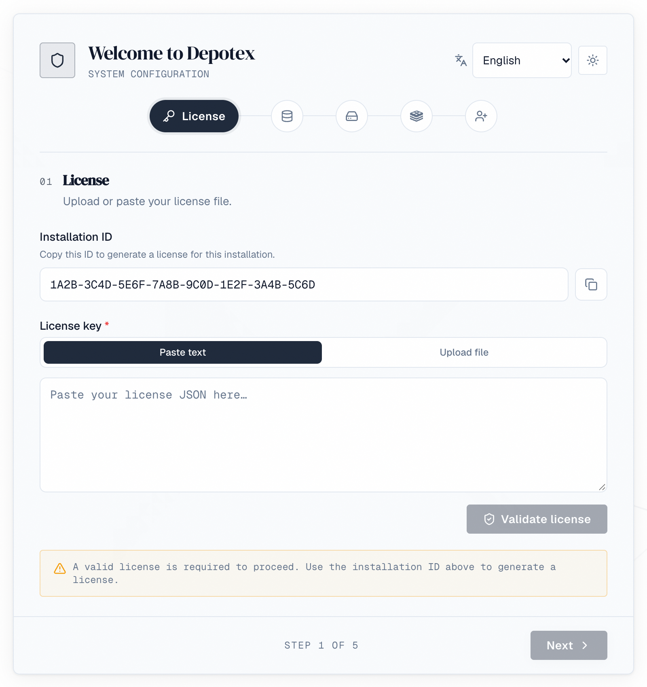

Depotex is a self-hosted platform. It needs PostgreSQL. Redis is optional for a single node and required for a cluster. On Kubernetes, use the container images and Helm chart: see Docker & Kubernetes.
1. First boot
Set DATABASE_URL and CONFIG_ENCRYPTION_KEY, then start the server. After the first boot the database URL is saved encrypted on the node, so later boots only need the encryption key.
2. The setup key
A fresh installation starts in setup mode and prints a one-time setup key in its log, in a line like open the setup wizard … setup_url=https://…/setup?token=…. Open that URL: setup only proceeds with the key, so nobody else who can reach the server can take it over before you do. The page removes the key from the address bar as soon as it has read it and keeps it only for that browser tab, so it doesn't stay in your history; reloading the tab keeps working, a new tab needs the link again.
The key changes each time the server restarts. Set SETUP_TOKEN to choose it yourself, for example when several nodes share the setup.
3. Setup wizard

- License — paste the license token issued for this installation.
- Database — confirm the PostgreSQL connection.
- Storage — choose local, S3, MinIO or Azure.
- Cache — add a Redis URL (one server, a Sentinel group or a Redis Cluster: see Single Node & Cluster), or skip it for a single node.
- Admin user — create the first administrator, or choose Restore from a backup to bring back a lost installation (see Backups → Disaster recovery).
Use the language menu at the top of the wizard to set it up in your language. The administrator account you create keeps that language; change it later from the profile menu.
Credentials entered in the wizard are stored encrypted in the database, not in environment variables.
CONFIG_ENCRYPTION_KEY is required on every start and protects every stored credential. Use a long random value (for example openssl rand -base64 32) and keep it somewhere safe: without it the installation cannot start.
4. Unattended setup
To set up without the wizard — for scripts, containers or configuration management — describe the installation in a YAML file and pass it at first start:
chmod 600 setup.yaml
CONFIG_ENCRYPTION_KEY=... ADMIN_PASSWORD=... ./server --setup-config setup.yamlThe file has the same sections as the wizard: database, cache, storage, license and admin. Write secrets as ${VARIABLE} and pass them in the environment, so they never sit in the file. An example ships as setup.example.yaml.
- The file is only read on a fresh installation. Delete it afterwards.
- It must not be readable by other users (chmod 600), and unknown keys are rejected so typos don't go unnoticed.
- If anything is wrong the server stops with an error explaining what to fix.
- Run ./server --machine-id to get the installation ID for your license request.
5. Behind a proxy
Set TRUSTED_PROXIES to the addresses of your load balancer and any other proxy in front of Depotex (IPs or CIDRs, comma-separated). The default trusts only the same host. Client addresses are used for IP allowlists, rate limits and audit logs: without the right setting, everyone behind the proxy shares one address and one budget.
Tell the web frontend a proxy is in front. Set FRONTEND_BEHIND_PROXY=true on the web frontend when a reverse proxy or load balancer in front of it sets X-Forwarded-For, X-Forwarded-Host and X-Forwarded-Proto (Caddy does by default, the nginx example below does, as do Kubernetes ingress controllers and cloud load balancers). The frontend then passes them on to the server. Without it the frontend ignores them, because anyone who reaches its port directly could send their own: every browser then counts as one address for rate limits, the sign-in lockout and the audit log, and repository addresses in package metadata (npm, PyPI) are built from the Host header the browser sent. The Helm chart sets it when its ingress is enabled.
With FRONTEND_BEHIND_PROXY=true, only the proxy may reach the frontend's port (3000 by default): a client that reaches it directly can choose the address Depotex sees.
Request size. The web frontend refuses API requests (/api) larger than FRONTEND_API_BODY_LIMIT bytes with 413 payload_too_large before they reach the server. The default, 33554432 (32 MiB), is the largest the server takes there: an SBOM upload (BROWSE_GUARD_MAX_SBOM). Raise it with BROWSE_GUARD_MAX_SBOM, or when PLUGIN_MAX_PACKAGE_SIZE goes above 31 MiB. Uploads to repositories, from the browser or a package manager, aren't affected. The proxy must allow bodies at least this large (nginx: client_max_body_size).
Route live updates to the backend. Alerts arrive instantly over a WebSocket at /api/ws on the same address as the app. The web frontend can't pass that connection on, so the proxy in front of Depotex must send /api/ws (and paths under it) straight to the backend with WebSocket upgrades allowed, and everything else to the frontend:
| Path | Goes to | Notes |
|---|---|---|
| /api/ws, /api/ws/… | Backend (port 8080 by default) | Allow the WebSocket upgrade; keep idle connections open for at least an hour |
| Everything else | Frontend (port 3000 by default) |
# Caddy
depotex.example.com {
@live path /api/ws /api/ws/*
reverse_proxy @live 127.0.0.1:8080
reverse_proxy 127.0.0.1:3000
}
# nginx (inside server { … })
location /api/ws {
proxy_pass http://127.0.0.1:8080;
proxy_http_version 1.1;
proxy_set_header Upgrade $http_upgrade;
proxy_set_header Connection "upgrade";
proxy_set_header Host $host;
proxy_set_header X-Forwarded-For $proxy_add_x_forwarded_for;
proxy_set_header X-Forwarded-Host $host;
proxy_set_header X-Forwarded-Proto $scheme;
proxy_read_timeout 1h;
}
location / {
proxy_pass http://127.0.0.1:3000;
proxy_set_header Host $host;
proxy_set_header X-Forwarded-For $proxy_add_x_forwarded_for;
proxy_set_header X-Forwarded-Host $host;
proxy_set_header X-Forwarded-Proto $scheme;
}Cloud load balancers (AWS ALB, Azure Application Gateway, Google Cloud Load Balancing) pass WebSockets through; add a path rule for /api/ws* to the backend and raise the idle timeout. Without this route nothing breaks: alerts refresh every 30 seconds instead, and the system check shows a Live updates warning until it's fixed.
6. After an update
When Depotex is updated, pages people already have open notice within a few minutes, or as soon as they return to the tab, and show A new version is available with Reload and Later. Nothing reloads on its own, so unsaved work isn't lost. During a rolling upgrade of several servers the message appears once the new version is serving. Proxies and CDNs must not cache the /app-version address. It answers anyone, signed in or not, with the build identifier of the running frontend; that is intended (open pages compare it) and it tells nothing else about the installation.
7. Security headers
Pages are served with security headers (frames from other sites are refused, the referrer is trimmed, HSTS). A Content-Security-Policy is sent in report-only mode by default; violations are logged by the frontend as [csp] lines. Set CSP_ENFORCE=true on the frontend once the log stays quiet.
8. Help menu and footer
Once signed in, everyone has a ? (Help) menu at the top of every page and a footer at the bottom:
| Where | What |
|---|---|
| ? menu | Documentation, Getting started, What's new, Send feedback, Report a bug, Contact support, and About |
| About | The version, build, build date and which server answered; Copy details copies them, with the page and browser, for a support request |
| Footer | On the left, the version, build and the server that answered the page (with several servers it can change between pages), whether Depotex runs as a cluster or a single server, and a button that copies these details for a support request. On the right, the Documentation, What's new, Support and Report a bug links your administrators set, the language (when more than one is installed), and a switch between the light, dark and high-contrast themes. |
Neither is shown on the sign-in page. When Report a bug or Contact support is an email address, the new message already holds the version and server details.
Point the links elsewhere. Under Settings → General → Help menu (settings:write, every license tier) set each link to an https:// address or a mailto: email address, for example your own wiki or service desk. Leave a link empty to hide its item, and Reset to defaults to go back. Changes raise the site.help.update event.